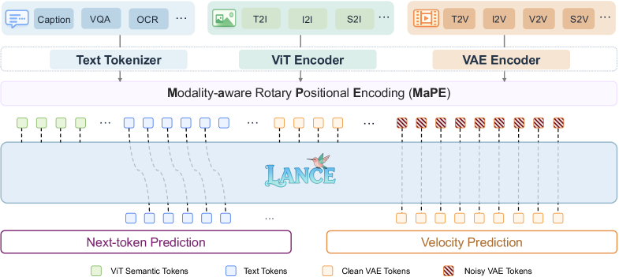
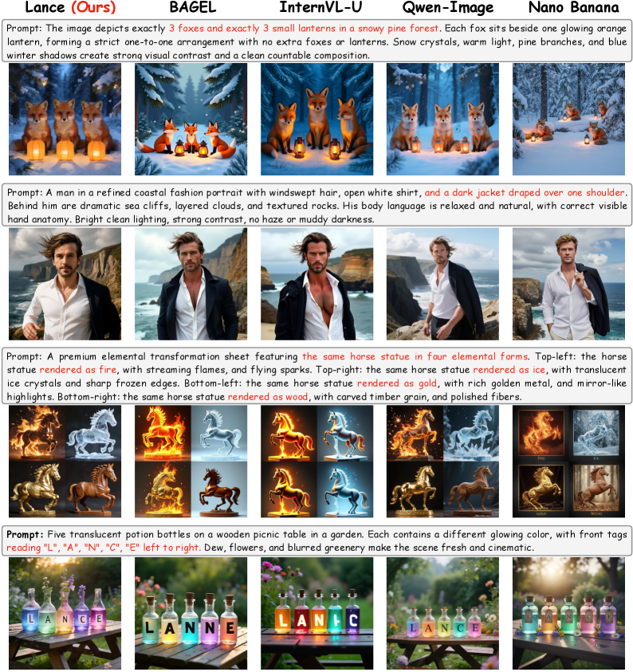
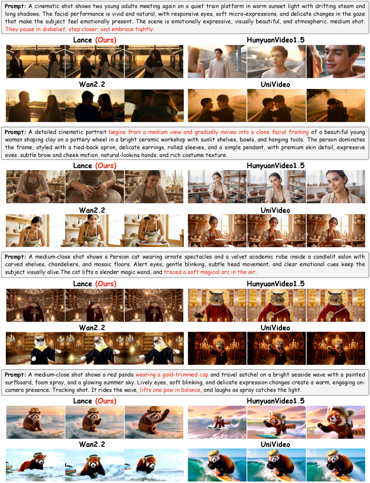
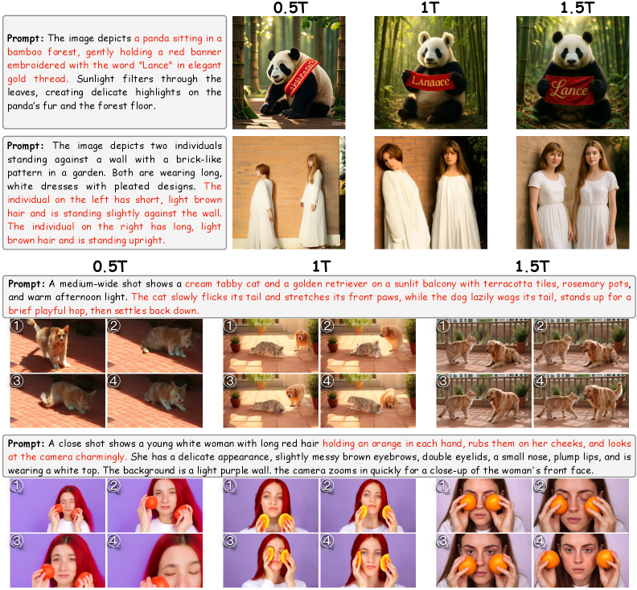

Lance proposes a lightweight native unified multimodal model that achieves strong image/video generation and understanding via a dual-stream MoE architecture and staged multi-task training, outperforming open-source unified models with only 3B activated parameters.
本文提出Lance，一个轻量级原生统一多模态模型，通过双流混合专家架构和分阶段多任务训练，在仅3B激活参数下实现了强大的图像/视频生成与理解能力，显著优于现有开源统一模型。该工作为资源受限场景下的多模态AI研究提供了实用范式。
Deep Note — lance
0) Metadata
- Title: Lance: Unified Multimodal Modeling by Multi-Task Synergy
- Alias: lance
- Authors: Fengyi Fu, Mengqi Huang, Shaojin Wu, Yunsheng Jiang, Yufei Huo, Hao Li, Yinghang Song, Fei Ding, Jianzhu Guo, Qian He, Zheren Fu, Zhendong Mao, Yongdong Zhang
- arXiv ID: 2605.18678
- Published:
- Links:
- Abs: https://arxiv.org/abs/2605.18678
- HTML: https://arxiv.org/html/2605.18678v1
- PDF: https://arxiv.org/pdf/2605.18678
- Tags: unified-multimodal, mixture-of-experts, multi-task-learning, image-generation, video-generation
- Domains: system_safety
- Rating: 4/5 (base 1 + quality 2 + observation 1)
1) Why-read
Lance proposes a lightweight native unified multimodal model that achieves strong image/video generation and understanding via a dual-stream MoE architecture and staged multi-task training, outperforming open-source unified models with only 3B activated parameters.
2) CRGP
C — Context
Multimodal AI is moving toward native unified models that integrate understanding, generation, and editing. Existing systems often separate understanding (semantic reasoning) and generation (visual synthesis) into different architectures, or use a single visual representation that struggles to balance both. Recent unified models like Emu3, Show-o, and TUNA have made progress but remain limited in task coverage and often require large model capacity.
R — Related work
- Non-native unified models like MetaQuery-XL, SEED-X, TokenFlow-XL, ILLUME, InternVL-U, and UniVideo assemble separately pre-trained components for understanding and generation.
- Native unified models like Chameleon, LWM, Janus, Transfusion, Emu3, Show-o, Bagel, Mogao, HaploOmni, VILA-U, HunyuanImage 3.0, Emu3.5, TUNA, and TUNA-2 jointly pre-train a unified architecture but often cover limited task subsets.
- MLLMs (e.g., Flamingo, LLaVA, Qwen-VL, InternVL) align visual encoders with language backbones for understanding, while diffusion/flow models (e.g., FLUX, Seedream, CogVideoX) focus on generation.
G — Gap
Existing unified models suffer from two key limitations: (1) visual-representation mismatch between understanding (high-level semantic features) and generation (low-level continuous representations), and (2) limited task coverage, with most methods confined to text-image domains or partial task combinations, leaving full image-video understanding, generation, and editing insufficiently explored. Diverse generation tasks like editing and subject-driven generation are often added as downstream fine-tuning rather than systematically optimized in multi-task training.
P — Proposal
Lance introduces a dual-stream mixture-of-experts (MoE) architecture on shared interleaved multimodal sequences, enabling joint context learning while decoupling pathways for understanding and generation. It uses modality-aware rotary positional encoding (MaPE) to mitigate interference among heterogeneous visual tokens and boost cross-task alignment. Training follows a staged multi-task paradigm with capability-oriented objectives and adaptive data scheduling to strengthen both semantic comprehension and visual generation.
---
4) Experiments
Main results
Lance with 3B activated parameters substantially outperforms existing open-source unified models on image and video generation tasks (e.g., T2I, T2V, I2V) while maintaining competitive multimodal understanding performance. All results are achieved within a 128-GPU training budget. Detailed benchmark numbers are referenced in the paper's experimental section.
Ablation
The dual-stream MoE architecture and MaPE are key to balancing understanding and generation; removing either degrades performance. Staged multi-task training with adaptive data scheduling improves both semantic comprehension and visual synthesis compared to joint training without staging.
Limitations
['The paper does not provide explicit numerical comparisons on all benchmarks in the provided excerpt, making it hard to quantify gains precisely.', 'The model is evaluated only on open-source baselines; comparison with proprietary systems (e.g., GPT-4V, Gemini) is missing.', 'The 128-GPU budget is modest, but scaling behavior to larger compute or model sizes is not explored.']
5) Why it matters
- Demonstrates that lightweight unified multimodal models can achieve strong performance via architectural innovations (dual-stream MoE, MaPE) rather than brute-force scaling.
- Provides a practical paradigm for multi-task synergy, showing that broader task coverage (including editing, subject-driven generation) can emerge from systematic multi-task training.
- Relevant to resource-constrained research settings: 3B activated parameters and 128-GPU training budget make the approach accessible.
6) Next steps
- [ ] Evaluate Lance on additional benchmarks (e.g., video understanding, long-context reasoning) to assess generalization.
- [ ] Explore scaling Lance to larger model sizes or longer training budgets to see if performance gains continue.
- [ ] Investigate the emergent generalization property: which unseen tasks benefit most from multi-task synergy?
- [ ] Apply the dual-stream MoE architecture to other modalities (e.g., audio, 3D) for unified multimodal modeling.
7) Scoring
4/5 = base 1 + quality 2 + observation 1
Lance：通过多任务协同实现统一多模态建模
主要结论 - Lance采用双流MoE架构，在共享交错多模态序列上实现联合上下文学习，同时解耦理解与生成路径。 - 提出模态感知旋转位置编码（MaPE），缓解异构视觉token间的干扰，提升跨任务对齐。 - 分阶段多任务训练结合自适应数据调度，系统性地优化语义理解与视觉生成。 - 仅3B激活参数和128-GPU训练预算即可达到领先性能，验证了架构创新而非暴力扩展的有效性。
1) 阅读理由
Lance通过双流MoE架构和分阶段多任务训练，在轻量级模型上实现了统一多模态理解与生成，关键发现是架构创新可替代大规模参数扩展。
2) CRGP（背景 / 相关工作 / 差距 / 方案）
多模态AI正朝着原生统一模型发展，但现有系统常将理解与生成分离，或使用单一视觉表示难以平衡两者。相关工作如Emu3、Show-o等虽取得进展，但任务覆盖有限且需大模型容量。现有统一模型存在两个关键局限：(1) 理解所需的高层语义特征与生成所需的低层连续表示之间的视觉表示不匹配；(2) 任务覆盖有限，多数方法局限于文本-图像领域或部分任务组合，图像-视频理解、生成和编辑尚未充分探索。Lance提出在共享交错多模态序列上采用双流混合专家架构，通过模态感知旋转位置编码（MaPE）缓解异构视觉token干扰，并采用分阶段多任务训练范式，结合能力导向目标和自适应数据调度，强化语义理解与视觉生成。
3) 实验
Lance在3B激活参数下，在图像和视频生成任务（如T2I、T2V、I2V）上显著优于现有开源统一模型，同时保持有竞争力的多模态理解性能。所有结果均在128-GPU训练预算内实现。详细基准数值请参阅论文实验部分。
消融实验
双流MoE架构和MaPE是平衡理解与生成的关键；移除任一组件都会导致性能下降。分阶段多任务训练结合自适应数据调度相比无分阶段的联合训练，在语义理解和视觉合成上均有提升。
局限性
['论文摘要中未提供所有基准的明确数值对比，难以精确量化增益。', '模型仅与开源基线比较，缺少与闭源系统（如GPT-4V、Gemini）的对比。', '128-GPU预算虽适中，但未探索向更大计算量或模型规模的扩展行为。']
4) 重要性
- 证明轻量级统一多模态模型可通过架构创新（双流MoE、MaPE）而非暴力扩展实现强性能。
- 提供了多任务协同的实用范式，表明更广泛的任务覆盖（包括编辑、主体驱动生成）可从系统性多任务训练中涌现。
- 对资源受限的研究场景具有参考价值：3B激活参数和128-GPU训练预算使该方法易于复现。
5) 下一步
- [ ] 在更多基准（如视频理解、长上下文推理）上评估Lance，以检验泛化能力。
- [ ] 探索将Lance扩展到更大模型规模或更长训练预算，观察性能增益是否持续。
- [ ] 研究涌现泛化特性：哪些未见任务从多任务协同中受益最多？
- [ ] 将双流MoE架构应用于其他模态（如音频、3D），实现统一多模态建模。



